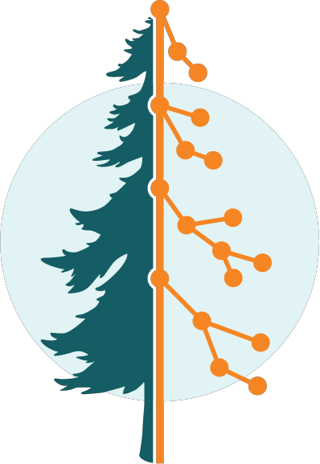

local_credentials.yml
# local yaml file that will NOT be pushed to the repo
# add this file to the .gitignore to prevent leaks
my_credentials:
username: super_secret_user_name
password: 12345terriblepassword

Person 1, person 2, etc
This is a static website documenting the proposed policies and standards for public Github use at the Pacific Northwest Genomic Center of Excellence. There are documents on
If there are any questions please reach out to Frank Aragona
Add crossreferences to the GH policies section and a brief intro here.
Personal or network credentials, tokens, server names and more are prohibited from being published to our public repos. Protect security and credentials with good coding practices. Using local environment files along with .gitignore can prevent credentials from being accidentally pushed into your repo. Other guardrails like pre-commit hooks can be used to further prevent accidental credential leaks. See more details on our security policies here
local_credentials.yml
# local yaml file that will NOT be pushed to the repo
# add this file to the .gitignore to prevent leaks
my_credentials:
username: super_secret_user_name
password: 12345terriblepassword
script_in_repo.R
# this script is in the repo, but credentials are hidden
library(yaml)
# read in the local credentials yaml file
creds <- yaml::read_yaml("path/to/local_credentials.yml")
# pull in the credentials
username <- creds$my_credentials$username
password <- creds$my_credentials$passwordEach repo in the organization should have a license. Licenses can help prevent your work from being stolen and/or used inappropriately. Licensing details here
This organization requires each repo to have certain documents, such as a CODE_OF_CONDUCT. The organization uses a special repo called .github to ensure all repos adhere to the policies and have the right documents.
If you’re looking to build a repository, check out the Github user guide tabs for best practices on reproducibility, documentation in the repo, and more.